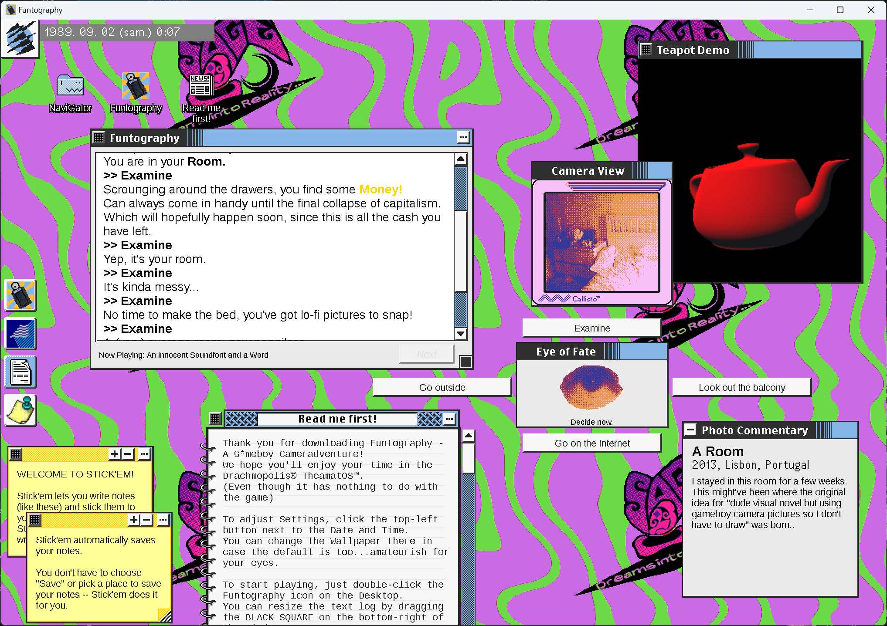
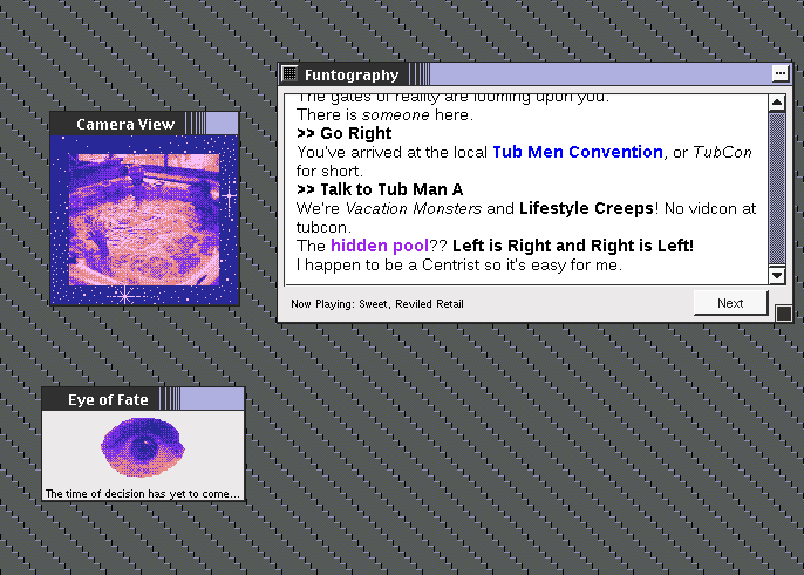
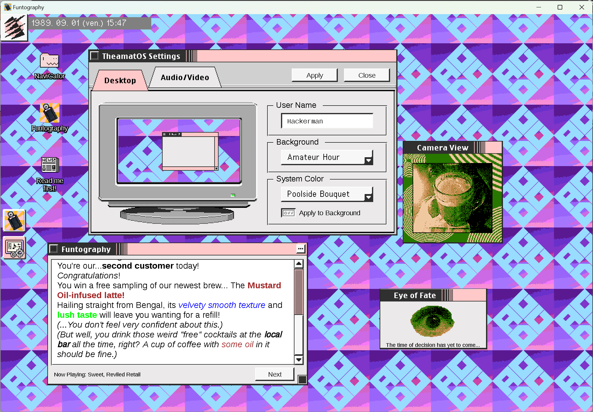
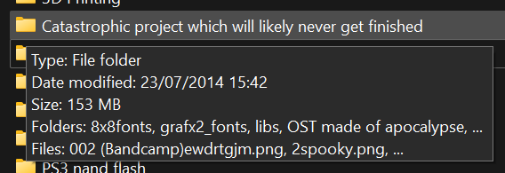
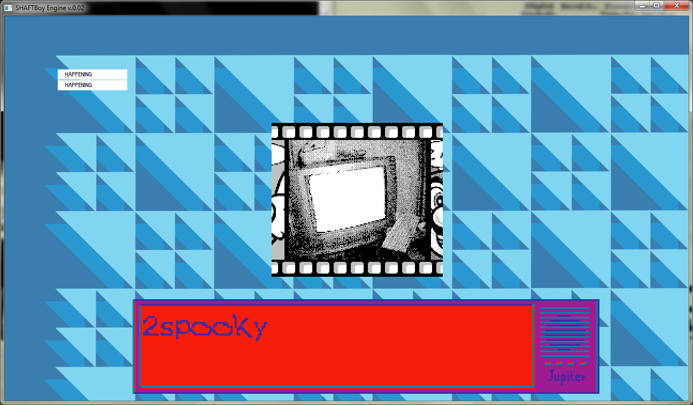
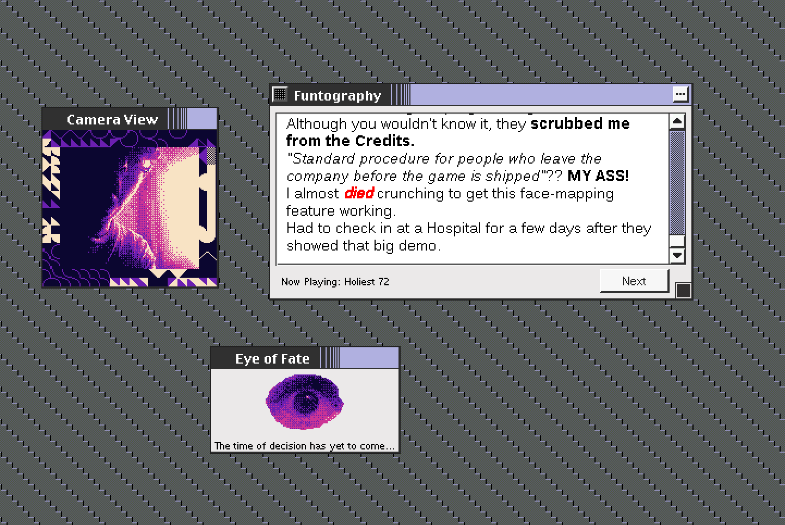

As mentioned in that previous post, the SAGE Double Donk is real!
I'm anxiously excited to release Funtography: A Gameboy Cameradventure, an actual *gulp* original video game.

Check it out at SAGE 2023! ... Or itch.io if that's more your speed.
In this 2h-long (1h if ur quick...) adventure game, enjoy looking at 100+ Gameboy Camera pictures as you explore various urban vistas to solve the mystery of a missing video game prototype.

- Four endings!
- Built-in developer commentary!
- Unlockable soundtrack!
- Bonus fake operating system!
It's got it all!

I hope you will consider taking a look at it in the midst of all the good-ass games releasing at SAGE.
Backstory
The concept behind this game, Visual novel that uses Gameboy Camera photos with varying palette and borders for extra context isn't really new* - I tried building this thing close to 10 years ago already.

I had a nice homegrown C++ engine with a barebones scripting system and all, ready to support the story... Then the major blocker happened:
"what kind of story should I even write, what the shit?"

Humans are natural story-tellers. Our brains are wired for storytelling, both in our enjoyment of experiencing stories, and our ability to create them. This fools us into thinking that storytelling is easy, which it’s not.
(Four Failures: 1996-2002)
So I shelved the whole thing, with a bunch of art assets, Gameboy photos and """music""" ready to go.

As I was building out this fake operating system that could run self-contained small apps and games, the idea of reviving Funtography kinda came up on its own.
"If a goal for this fake OS game is to have unlockable smaller games within it... Why shouldn't I just reuse all those old assets I already had?"
Then of course it ballooned out of control as I started writing -- The extra engine work and plot outline were made during the lockdowns after bingewatching Twin Peaks**, but most of the writing happened this year after work on DialogueForest*** wrapped up.
Considering the result actually stands out on its own length-wise, I wanted to ship it early, as both a demo of the existing fake OS#...and hopefully something compelling enough on its own.

Since I'm not really a pro writer, I thought the best I could do would be to make it as earnest/genuine as I could -- Even if it ends up being a bit corny, I hope it at least makes for something more engaging than a ebin ironic story would be.
At least, I can pretty confidently say it's unique...Which is something I did mention wanting to do.
And it does feel nice to have realized an old concept from years past! I am cringe but I am free.
* Or original for that matter -- Check out Pocket Puppet if you want more Cameradventure! It even works on real hardware.
** You can certainly see the influences in the final product - Not as much as I was expecting tho
*** Which of course, I did not use while writing Funtography... I relied on VIDE Dialogues for Unity instead as that allowed me to integrate the SFX/palette/border changes better. Still ended up a mess
# Slated for release 2035.. I want to keep working on the larger game but I feel some respite knowing that even if I give up on it now, at least some portion of it will have been used.